Loi Élan
Depuis 1er janvier 2020 et l'entrée en vigueur de la loi Elan, la réalisation d’études de sol avant la vente d’un terrain constructible ou la construction d’une habitation est obligatoire dans des zones exposées à un aléa moyen ou fort en termes de retrait-gonflement des argiles.
L’objectif du dispositif mis en place par l’article 68 de la loi Élan est de limiter les sinistres liés au phénomène de retrait-gonflement des argiles consécutifs à des périodes de sécheresse (les sols se rétractent) et de pluie (les sols se gonflent).
Il est donc nécessaire d’informer les acquéreurs de terrains constructibles et les constructeurs de maisons individuelles sur la nature du sol dans les zones exposées, et de s'assurer que les règles de l'art sont bien mises en œuvre.
GEOTECH SOLUTIONS réalise vos études de sol en alliant réactivité, fiabilité et optimisation des coûts.
Êtes-vous concerné?
Si votre terrain est exposé modérément ou fortement au phénomène de retrait-gonflement des argiles, l’article 68 de la loi Elan s’applique lorsque :
- Vous vendez un terrain constructible
- Vous avez un projet de construction
Pour vérifier l’exposition de votre terrain c’est ici.
Une étude de sol n’est pas obligatoire si votre terrain n’est pas exposé au risque de retrait gonflement des argiles mais reste vivement conseillée et permet une première identification des risques géotechniques du site. Les phénomènes sismiques, les glissements de terrain ou la présence de cavités sont d’autres sources de dangers.
BON A SAVOIR
Une étude de sol représente moins de 1% du budget total d’un projet et permet d’optimiser le coût de réalisation des terrassements et des fondations. A titre de comparaison, lors de désordres, le coût des réparations s’élève, en général, à plusieurs dizaines de milliers d’euros et n’est pas toujours pris en charge à 100% par votre assurance.
Vous vendez un terrain constructible
Vous devez obligatoirement fournir une étude géotechnique de type G1 PGC (Principes Généraux de Construction), pour être en accord avec les exigences des articles L.112-21 et R.112-6 du code de la construction et de l’habitation et l’article 1 de l’arrêté du 22 juillet 2020.
Cette étude doit comprendre une enquête documentaire, une synthèse des archives, une visite de site, et préciser les horizons porteurs potentiels.
Dans ce cadre-là, GEOTECH SOLUTIONS réalisera :
- Une visite de site
- Une enquête documentaire
- Une campagne d’investigations géotechniques permettant l’identification des caractéristiques mécaniques des sols en place
- La réalisation d’essais d’identification en laboratoire indispensables à la caractérisation des argiles vis-à-vis de l’aléa sécheresse
- Un rapport d’étude comprenant :
- La synthèse des données issues du terrain, du laboratoire, de l’enquête documentaire et de notre expertise
- L’évaluation des risques géotechniques
- Les dispositions générales à tenir vis-à-vis de ces risques
GEOTECH SOLUTIONS réalise vos études G1 PGC en alliant réactivité, fiabilité et optimisation des coûts. Pour votre devis personnalisé cliquez ici
A noter : La loi s’applique rétroactivement aux actes de vente mentionnés aux articles L. 112-21 et L. 112-24 du code de la construction et de l'habitation et aux contrats de construction conclus à compter du 1er janvier 2020. L’étude de sol doit impérativement être annexée au titre de propriété du terrain et suivre les ventes successives de votre bien. Pour information, la durée de validité de cette étude géotechnique préalable pour vente d’un terrain constructible non bâti est de 30 ans si aucun remaniement du sol n’a été effectué (article R.112-8 du code de la construction et de l’habitation).
Vous souhaitez faire construire
Votre terrain est situé en zone d’aléa moyen ou fort et vous ne possédez pas d’étude géotechnique de type G1
Vous devez obligatoirement fournir une étude géotechnique de conception de type G2 AVP (Avant-Projet) ou PRO (Projet), pour être en accord avec les exigences des articles L.112-22 du code de la construction et de l’habitation.
Cette étude doit comprendre une enquête documentaire, une synthèse des archives, une visite de site, des précisions sur les principes de construction envisageables et une ébauche dimensionnelle par type d’ouvrage.
Dans ce cadre-là, GEOTECH SOLUTIONS réalisera :
- Une visite de site
- Une enquête documentaire
- Une campagne d’investigations géotechniques permettant l’identification des caractéristiques mécaniques des sols en place
- La réalisation d’essais d’identification en laboratoire indispensables à la caractérisation des argiles vis-à-vis de l’aléa sécheresse
- Un rapport d’étude comprenant :
- La synthèse des données issues du terrain, du laboratoire, de l’enquête documentaire et de notre expertise
- L’évaluation des risques géotechniques
- Les dispositions générales à tenir vis-à-vis de ces risques
- La définition, la comparaison et le pré dimensionnement (AVP) ou le dimensionnement (PRO) des solutions de fondations envisageables pour le projet
GEOTECH SOLUTIONS réalise vos études G2 AVP ou PRO en alliant réactivité, fiabilité et optimisation des coûts.
Pour votre devis personnalisé cliquez ici
Votre terrain est situé en zone d’aléa moyen ou fort et vous possédez une étude géotechnique de type G1 issu de l’achat du terrain
Deux cas se présentent à vous pour être en accord avec les exigences des articles L.112-22 et L.112-23 du code de la construction et de l’habitation.
Cas 1 : Le constructeur de l’ouvrage est tenu de suivre les recommandations d'une étude géotechnique fournie par le maître d'ouvrage ou que le constructeur fait réaliser par accord avec le maître d'ouvrage, qui prend en compte l'implantation et les caractéristiques du bâtiment.
Vous devez obligatoirement fournir ou faire réaliser par le constructeur une étude géotechnique de conception de type G2 AVP (Avant-Projet) ou PRO (Projet), pour être en accord avec les exigences de l’article 2 de l’arrêté du 22 juillet 2020 du code de la construction et de l’habitation.
Cette étude doit comprendre une enquête documentaire, une synthèse des archives, une visite de site, des précisions sur les principes de construction envisageables et une ébauche dimensionnelle par type d’ouvrage.
Dans ce cadre-là, GEOTECH SOLUTIONS réalisera :
- Une visite de site
- Une enquête documentaire
- Une campagne d’investigations géotechniques permettant l’identification des caractéristiques mécaniques des sols en place
- La réalisation d’essais d’identification en laboratoire indispensables à la caractérisation des argiles vis-à-vis de l’aléa sécheresse
- Un rapport d’étude comprenant :
- La synthèse des données issues du terrain, du laboratoire, de l’enquête documentaire et de notre expertise
- L’évaluation des risques géotechniques
- Les dispositions générales à tenir vis-à-vis de ces risques
- La définition, la comparaison et le pré dimensionnement (AVP) ou le dimensionnement (PRO) des solutions de fondations envisageables pour le projet
GEOTECH SOLUTIONS réalise vos études G2 AVP ou PRO en alliant réactivité, fiabilité et optimisation des coûts.
Pour votre devis personnalisé cliquez ici
Cas 2 : Le constructeur de l’ouvrage doit respecter des techniques particulières de construction définies par voie réglementaire.
Dans ce second cas, une étude de sol de type G2 en phase AVP (Avant-Projet) ou PRO (Projet) n’est pas obligatoire mais reste vivement conseillée.
ATTENTION : Le constructeur de l’ouvrage va se baser sur votre étude G1 PGC. Celle-ci date de la (première) vente du terrain et ne prend pas en compte l'implantation, les caractéristiques et les spécificités de la construction future. N’hésitez pas à lui faire préciser les dispositions particulières mises en œuvre.
BON A SAVOIR : Une étude de sol représente moins de 1% du budget total d’un projet et permet d’optimiser le coût de réalisation des terrassements et des fondations. A titre de comparaison, lors de désordres, le coût des réparations s’élève, en général, à plusieurs dizaine de milliers d’euros et n’ai pas toujours pris en charge à 100% par votre assurance.
GEOTECH SOLUTIONS est à votre disposition pour vous conseiller et vous accompagner tout au long de votre projet. Contactez-nous
Votre terrain est situé en zone d’aléa moyen ou fort et vous avez un projet d’extension
Deux cas se présentent à vous :
- Cas 1 : Le bâtiment avait fait l'objet d'une étude géotechnique de conception qui prévoyait le projet d'extension : l'étude géotechnique de conception initiale vaut étude géotechnique de conception pour l'extension, sous réserve que le procédé constructif soit le même que dans l'étude initiale.
- Autres cas : Dans tous les autres cas, vous devez obligatoirement fournir ou faire réaliser par le constructeur une étude géotechnique de conception de type G2 AVP (Avant-Projet) ou PRO (Projet), pour être en accord avec les exigences de l’article 2 de l’arrêté du 22 juillet 2020 du code de la construction et de l’habitation.
Cette étude doit comprendre une enquête documentaire, une synthèse des archives, une visite de site, des précisions sur les principes de construction envisageables et une ébauche dimensionnelle par type d’ouvrage
Dans ce cadre-là, GEOTECH SOLUTIONS réalisera :
- Une visite de site
- Une enquête documentaire
- Une campagne d’investigations géotechniques permettant l’identification des caractéristiques mécaniques des sols en place
- La réalisation d’essais d’identification en laboratoire indispensables à la caractérisation des argiles vis-à-vis de l’aléa sécheresse
- Un rapport d’étude comprenant :
- La synthèse des données issues du terrain, du laboratoire, de l’enquête documentaire et de notre expertise
- L’évaluation des risques géotechniques
- Les dispositions générales à tenir vis-à-vis de ces risques
- La définition, la comparaison et le pré dimensionnement (AVP) ou le dimensionnement (PRO) des solutions de fondations envisageables pour le projet
GEOTECH SOLUTIONS réalise vos études G2 AVP ou PRO en alliant réactivité, fiabilité et optimisation des coûts.
Pour votre devis personnalisé cliquez ici